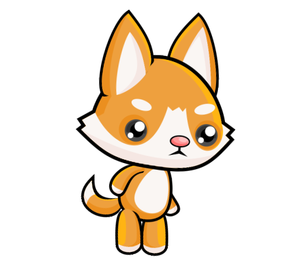

Si të bëni një animacion¶
Një mënyrë e thjeshtë për të marrë një animacion është të vendosni pjesën e një programi që vizaton një kornizë në një funksion të veçantë. Si rregull, ne do ta quajmë këtë funksion new_frame në programe, megjithëse mund të ketë ndonjë emër tjetër.
Ndryshimi i vizatimeve¶
Për të marrë një animacion, funksioni që vizaton një kornizë duhet të krijojë një vizatim pak më ndryshe nga ai i mëparshmi në thirrjen tjetër, pasi që pa ndryshime nuk ka asnjë animacion. Që vizatimi i ri të jetë i ndryshëm, vetë vizatimi duhet të varet nga vlerat e disa ndryshoreve. Ndryshimi i vlerave të ndryshoreve nga të cilat varet vizatimi do të rezultojë në një vizatim të ndryshëm.
Për shembull, këtu është se si mund të krijojmë një program që shfaq në mënyrë alternative një zemër më të vogël dhe më të madhe.


Funksioni përdor variablin image_index, i cili merr vetëm vlera 0 ose 1. Ky variabël përdoret si indeks (numri rendor) i një imazhi në listën e figurave, i cili përbëhet nga dy imazhe. Bazuar në variablin image_index, programi vendos se cila nga dy imazhet do të shfaqet. Me secilin ekzekutim të ri të funksionit new_frame, ndryshorja image_index ndryshon vlerën (nëse ka qenë 0, ajo merr një vlerë prej 1 dhe anasjelltas), duke ndryshuar kështu imazhin që do të shfaqet.
Variablat nga të cilat varet vizatimi thuhet se përshkruajnë skenën. Mund të ketë një ose më shumë variabla të tilla. Në shembullin me zemër, skena përshkruhet nga një variabël, e cila është variabla image_index.
Në rastin e përgjithshëm, kur krijojmë një kornizë të re animacioni, ne përdorim vlerat e vjetra të variablave që përshkruajnë skenë për të llogaritur vlerat e tyre të reja. Duke vepruar kështu, vlerat e reja mund ose nuk mund të jenë të ndryshme nga ato të vjetra. Ne e quajmë këtë llogaritje një përditësim të skenës.
Variablat globale¶
Për të qenë në gjendje të azhurnoni një skenë në funksionin new_frame, variablat që përshkruajnë skenën duhet të kenë vlera para dhe pas ekzekutimit të funksionit new_frame. Prandaj, ne duhet të formojmë këto variabla (t’i caktojmë vlerat e para) në pjesën kryesore të programit. Kur përdorim variabla të tilla në një funksion, ne i quajmë ato variabla globale. Në të kundërt, variablat e bëra në vetë funksionin quhen ndryshore lokale, dhe ato ekzistojnë vetëm gjatë ekzekutimit të funksionit.
Kur caktojmë vlera në një variabël globale në një funksion, duhet të tregojmë që në fillim të funksionit se këta janë variablia që ekzistojnë tashmë dhe janë formuar jashtë këtij funksioni. Për variablin image_index në shembullin e mësipërm, ne e arritëm këtë duke shkruar global image_index në rreshtin e parë të funksionit. Nëse ne nuk e shpallëm variablin global, Python do të përpiqej të krijonte një variabëk të ri lokale me të njëjtin emër kur cakton një vlerë në variabël.
Kur ekzistojnë shumë variabla globale që synojmë t’i modifikojmë në një funksion, pas fjalës globale duhet të rendisim emrat e të gjitha ndryshoreve të tilla, të ndara me presje.
Shpejtësia e animacionit¶
Shpejtësia e animacionit përcaktohet nga kohëzgjatja e secilës kornizë, d.m.th., numri i kornizave të shfaqura në një njësi të kohës. Për të treguar shkallën në të cilën shfaqen kornizat e njëpasnjëshme, ne përdorim shkurtimin (gjithashtu njësinë e matjes) fps - korniza për sekondë. Kur krijojmë një animacion, një nga gjërat që duhet të bëjmë është të zgjedhim shpejtësinë e interpretimit dhe ta vendosim atë në programin tonë si numrin e kornizave që duam që programi të krijojë dhe shfaqë për sekondë.
Në programin e kaluar, kemi përdorur 2 korniza për sekondë për të marrë një ritëm të ngjashëm me rrahjet e zemrës. Duke vepruar kështu, ne kemi dalluar qartë dy korniza që shfaqen në mënyrë alternative. Për të marrë përshtypjen e lëvizjes na duhen vetëm shpejtësi më të mëdha dhe më shumë imazhe.
Zakonisht, të paktën 15 fps përdoren për animacion lëvizjeje, sepse me shpejtësi më të ngadalshme të lëvizjes lëvizja mund të duket e ndërprerë. Për shembull, shfaqjet televizive zakonisht përdorin 24 fps, dhe në ditët e sotme, lojërat video nën 30 fps nuk konsiderohen të ofrojnë një përvojë të mjaftueshme. Animacionet edhe më të shpejta mund të ofrojnë efekte edhe më të mira për disa shikues, por ato janë gjithashtu më të shtrenjta për t’u krijuar dhe dhënë.
Nëse vendosim një shpejtësi shumë të lartë në programet tona, mund të mos jetë e mundur që kompjuteri ynë të arrijë një shpejtësi të tillë të gjenerimit të imazhit, as një shpejtësi të tillë të ekranit. Në këtë rast, nuk do të ndodhin gabime, por niveli aktual (efektiv) i kornizës do të jetë më i vogël (ai që kompjuteri mund të arrijë).
Animimi i drejtimit nga teksti hyrës mund të arrihet me një program shumë të ngjashëm me shembullin e zemrës. I vetmi ndryshim thelbësor është se përdor një numër më të madh të imazheve (tetë në vend të dy) dhe një shkallë më të lartë kornizash.



Provoni norma të ndryshme kornizash dhe shikoni se si ndikon ai parametër në shfaqjen e animacionit. Sigurisht, përveç numrit të kornizave për sekondë, përvoja e përgjithshme ndikohet gjithashtu nga sa ndryshojnë imazhet e njëpasnjëshme (më shumë imazhe me dallime më të vogla japin një efekt më të mirë, por kërkon një shkallë më të lartë të kornizës).
Le të përmbledhim atë që duhet të bëni për të krijuar një animacion:
të përcaktojë variablat globale që përshkruajnë skenën (këto të dhëna do të ndryshojnë gjatë animacionit);
përcaktoni një funksion
new_frameqë azhurnon të dhënat për karakteret dhe objektet në skenë, dhe pastaj komplotoni skenën (mos harroni të rendisni variablat globale që janë modifikuar në funksion pas fjalësglobal);në fund të programit, thirrni funksionin
pygamebg.frame_loop (fps, new_frame), ku * fps * është niveli i dëshiruar i kornizës. Funksioni frame_loop, përveç çdo gjëje që ka bërë wait_loop, gjithashtu e quan funksionin new_frame një numër të kërkuar herë në sekondë. Kjo është arsyeja pse në animacione do të mbarojmë programet me frame_loop në vend të wait_loop.
Animime - pyetje¶
-
Q-67: Vendosni kohëzgjatjen e kornizës me numrin e kornizave për sekondë.
Provo përsëri!
- 10 fps
- 100 milliseconds
- 20 fps
- 50 milliseconds
- 50 fps
- 20 milliseconds
- 100 fps
- 10 milliseconds

{kind=link}
Ushtrim - sugjerim: Nëse ju pëlqen, provoni të krijoni një program Python që do të shfaqë ciklike fotot tuaja të zgjedhura ose imazhet e tjera të zgjedhjes suaj (nëse të gjitha fotografitë tuaja janë me të njëjtën madhësi, ju keni mësuar tashmë gjithçka që ju nevojitet). Mbani në mend se norma e kornizës mund të jetë më pak se 1 fps dhe mund të mos jetë një numër i plotë (por duhet të jetë pozitiv). Për shembull, në programin “Slideshow” që sugjerojmë, ekziston një nevojë natyrale që secila imazh të zgjasë më shumë se një sekondë.
Për të shfaqur secilën kornizë për dy sekonda, sa korniza për sekondë duhet të vendosen në program?
- image_index = image_index + 1 % num_images
- Provo përsëri
- image_index = (image_index % num_images) + 1
- Provo përsëri
- image_index = (image_index + 1) % num_images
- Saktë
- image_index = image_index % (num_images + 1)
- Provo përsëri
Si të bëni një animacion¶
Në shembullin “Running”, kërkohej që variabla image_index në mënyrë ciklike të marrë vetëm ato vlera që korrespondojnë me pozicionet e imazheve në listë. Kur kemi tetë imazhe, këto vlera janë 0, 1, 2, 3, 4, 5, 6, 7, 0, 1, 2, etj. Në rastin e përgjithshëm, për n imazhet këto vlera janë 0, 1, 2, … n-1, 0, 1, 2, etj.
Kujtojmë që operatori % tregon funksionimin e llogaritjes së pjesës së mbetur pas ndarjes. Me këtë operacion, ne mund të arrijmë të njëjtin qëllim në shënim më të shkurtër. Cila nga komandat e mëposhtme mund të zëvendësojë në mënyrë të barabartë këtë pjesë të programit?
image_index = image_index + 1 # move on to the next picture if image_index == num_images: # if there is no next picture ... image_index = 0 # return to the first picture